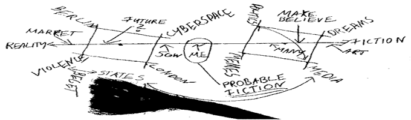

It is an interesting question when one takes oneself and tries to fit into the big picture of things. Becoming clear of one’s own position in life, world affairs – and defining where one wants to be in the future.
When I asked myself these questions I began scribbling down what I perceived as my personal coordinate system. The result was the name for this blog, and the picture seen here (it is also the title scribble of this website):

It represents the continuum between reality and fiction when it comes to the wakeful perception of our lives and minds. We are all somewhere between reality and fiction, and we are constantly moving towards or away from the one or the other.
Instead of simply defining reality as the place I always want to be, I chose instead to be aware of where on this scale my specific thoughts are. Reality alone might be an interesting thing, but it is either static – or you become a passive object of it. Being aware and embracing fiction is what helps us shape this reality in the future. And with the current state of affairs the future seems to look more and more like our visions of fiction.
So I settled somewhere in the middle, looking both ways, and embracing fiction as a way to understand and shape the current reality, and the reality I want to see in the future. To become active in my being. And to become aware that what we so often claim to know is really just a mixture of what is and what is imagined, but also that much of what we want to know and communicate requires to stand separate from a purely objective way of looking at things. We are simply not capable of real objectivity – but we are capable to realize that everything has to be taken with a grain of salt.
The things near reality that play a major role in my life are Berlin, London, Cyberspace and Violence.
Berlin is the place I mostly operate from, so it is a natural.
London is actually a placeholder for the other cities that have influenced me and that I still love as hangouts and drop-points: London, Zurich, Vancouver.
Cyberspace is what my work is most concerned with. This imaginary place where bits become atoms and travel with the speed of light. Communication between people on far apart continents, messages that race around the world and infect our perception. It is where many of our future conflicts and solutions come from, be it Cyberwar or Cyberliberty. But it is also one of the biggest distractions ever invented.
Violence however seems to be a strange pick. It is the negative part of reality that I am strongly concerned with. Violence, aggression, force – these have been parts of human nature and society for a very long time, and they are amongst the biggest shapers of how we live. But they are not positive shapers to embrace, but things to control and make less necessary. I hope and work for being more peaceful, and to work for more peace.
On the other end of the scale, the place where so many people seem to be solely captured with their minds, lies fiction. It is where most of our fears and hopes come from, and what plays a crucial role in our self-being and choices.
I admit to dream, and do not intend to give it up. Not so much dreams of escape, but dreams as methods of envisioning solutions, motivating people and driving business. Dreams is where so much of real innovation comes from.
But there is more to the side of fiction. It is also where large parts of media and politics exist – those tools of make-belief and self-illusion. Where things are over-simplified and understated.
Last but not least, we have our dear memes. Those little ideas that take a hold in culture and shape it through the things we long for (dreams), things we force for (politics), things we lie for (media). I have always been intrigued by this little concept, without accepting it as a sufficient way to describe cultural evolution. Still, the concept helps us think.
My personal impression has been for a long time that many people are captured within the fiction side of things, without realizing or admitting it. We usually take pride in being realistic and pragmatic. But far too often this is an illusion. Instead we should embrace our ambivalence and enjoy it.
That leaves us with the last elements of the scribble: Art, 5GW, Market and State.
I am interested in art as the exploratory imagination and realization of perception and hopes – especially in scifi literature and story-telling computer games. They both shape future.
5GW stands for “Fifth Generation Warfare”. While I am less interested in this subject today, I was a lot when I made the scribble. It asks the question of how wars will be fought in the future, who will fight them, and what strategies will prevail. Well, maybe I am still a bit curious about it.
Economics and markets versus the State is another major theme in my thoughts. In spite of good public schooling I came to the realization that markets are better than their names, and states most often a hindrance to peace and prosperity. It is one of the battles of this century – and deeply interesting and troubling.
Finally, there are things that have not found their way into the scribble above. Not because they are less interesting for myself, but because they have little or nothing to do with this blog. These are things like faith, my wife, my friends, music and vine. While all these are of varying but great importance to me, they are of little interest to my struggles between reality and fiction. Those things are settled, and not public puzzles.